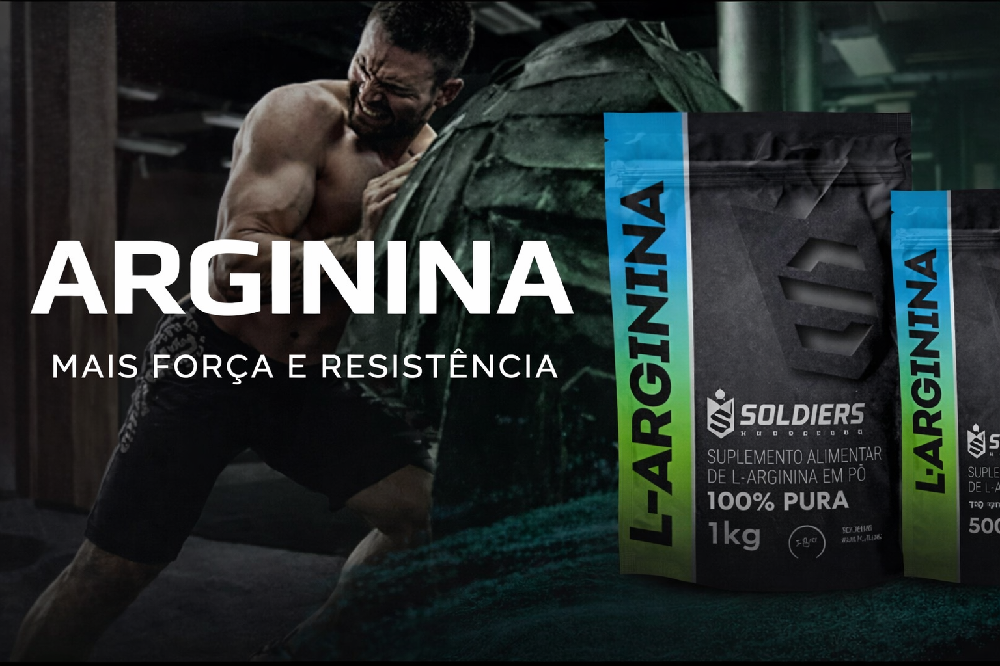

Para que serve a Arginina no Esporte e na Saúde?
Por Equipe AchadoCerto.VIP | Ciência e Performance
A Arginina é um aminoácido fundamental para quem busca elevar o patamar dos treinos. Sua principal função é ser precursora do Óxido Nítrico, um gás que promove a relaxação dos vasos sanguíneos, melhorando o fluxo de oxigênio pelo corpo.
🚀 Benefício Real: Melhora imediata na vascularização (Pump) e maior transporte de nutrientes para os músculos durante o exercício.
Impactos no Treino e no Bem-Estar
1. Vascularização e Pump: Ao dilatar os vasos, a Arginina deixa as veias mais aparentes e os músculos com aspecto mais "cheio" durante e após o treino.
2. Redução da Fadiga: Ela auxilia na remoção de amônia e outros resíduos metabólicos, permitindo que você treine por mais tempo antes de atingir a exaustão.
3. Saúde Cardiovascular: No dia a dia, ajuda a manter níveis saudáveis de pressão arterial e auxilia na saúde do coração.
🎯 Nosso "Achado Certo" de Hoje
Selecionamos esta Arginina de Alta Pureza pela sua tecnologia de absorção ultra rápida e pelo alto índice de aprovação na comunidade fitness para performance e vasodilatação.
🛒 VER OFERTA NO MERCADO LIVREProduto Verificado | Estoque no Brasil | Entrega Rápida
Por que Suplementar?
- Estímulo natural ao ganho de massa magra.
- Melhora na cicatrização e regeneração tecidual.
- Aumento da imunidade e vigor físico.
Não perca nenhum achado! Receba ofertas em tempo real direto no seu celular:
Seguir nosso Canal de Ofertas